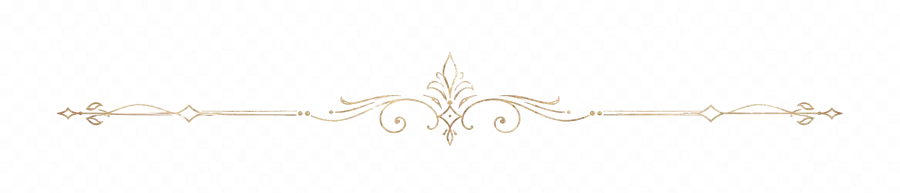
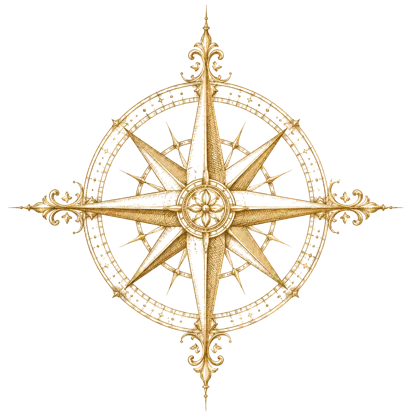
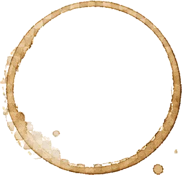
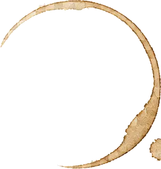
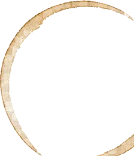
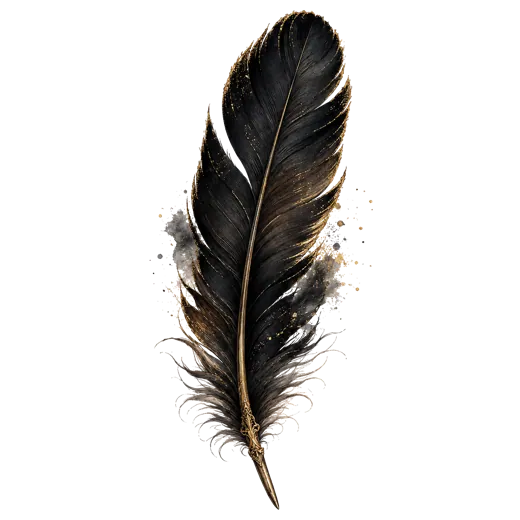

UNSEALING THE ARCHIVE
A private archive of power, blood, prophecy, dragons, women, war, and doomed history.
每个家族不是百科条目，而是 Kepler 视角里的权力气味和命运纹章。
人物页不是百科，而是“我为什么被她震住”的私人肖像柜。

权力、血统、女性、母职、战争与预言，围绕同一处伤口展开。
从长夜传说到龙家内战，从征服战争到五王之战。





I did not come here to summarize. I came here to keep the wound.— KEPLER · PRIVATE MARGINALIA
龙不是宠物，是王朝、梦境、暴力、神话和毁灭的集合体。
火焰里长出一棵心树，雪落下来，整个世界安静地结霜。
两种元素，同一道伤口。